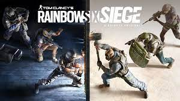

Jogos Favoritos
tom clancy's rainbow six siege
"tom clancy's rainbow six siege" é um jogo de tiro na primeira pessoa táctico, em que os jogadores assumem o papel de um dos membros da equipe Rainbow, uma unidade contra-terrorista. Os membros têm diferentes nacionalidades, habilidades e equipamentos..

cyberpunk 2077
"Cyberpunk 2077" é um jogo eletrônico de RPG de ação jogado numa perspectiva em primeira pessoa na pele de V (Vincent/Valerie), um mercenário cuja voz, rosto, estilo de cabelo, tipo de corpo e modificações, história de origem e roupas são personalizáveis..